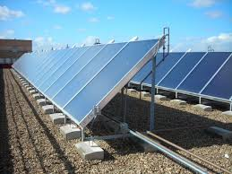
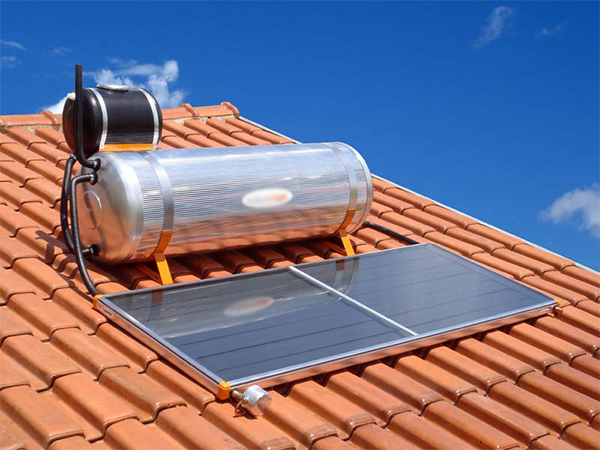
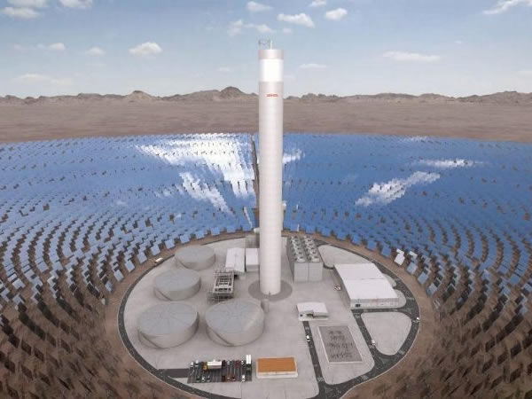
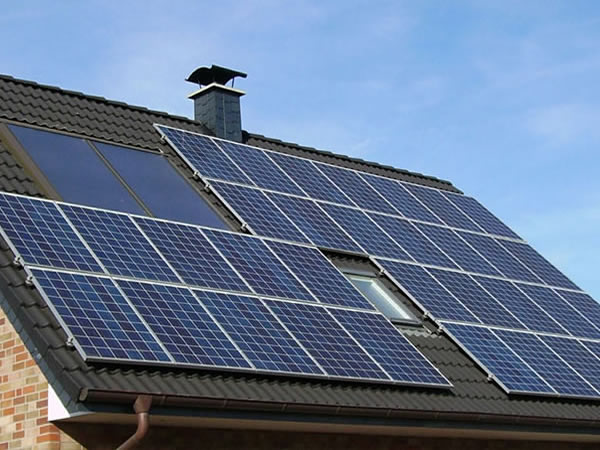

A energia solar é a energia eletromagnética cuja fonte é o sol. Ela pode
ser transformada em energia térmica ou elétrica e aplicada em diversos
usos. As duas principais formas de aproveitamento da energia solar são a
geração de energia elétrica e o aquecimento solar de água.
Para a produção de energia elétrica são usados dois sistemas: o
heliotérmico, em que a irradiação é convertida primeiramente em energia
térmica e posteriormente em elétrica; e o fotovoltaico, em que a
irradiação solar é convertida diretamente em energia elétrica.
Em vista de condições hidrológicas desfavoráveis, com períodos de
estiagem cada vez mais prolongados, a energia solar se apresenta como
uma alternativa. Ainda mais se considerarmos que os períodos de seca
estão associados ao aumento do potencial solar devido à baixa
interferência de nuvens e radiação solar mais intensa.
O que é energia solar
Energia solar é a energia proveniente da luz e do calor do Sol que é
aproveitada e utilizada por meio de diferentes tecnologias,
principalmente como o aquecimento solar, energia solar fotovoltaica,
energia heliotérmica e arquitetura solar.
Se você esta pensando em utilizar a energia solar, você esta,
provavelmente, procurando dois tipos distintos de se aproveitar e
energia do sol: Energia Solar Fotovoltaica OU Energia Solar Térmica
(também conhecido como aquecedor solar).
Uma célula solar, ou célula fotovoltaica, é um dispositivo elétrico
que converte a energia da luz do Sol diretamente em energia elétrica
através do efeito fotovoltaico.
A energia solar é considerada como inesgotável do ponto de vista humano.
O potencial de energia solar é excepcional em comparação com todas as
outras fontes de energia. Veja abaixo o potencial da energia solar em
comparação com as outras fontes de energia. Ao lado direito da figura
observamos o potencial total das fontes de energia não renováveis, ou
seja, que provavelmente irão se esgotar algum dia, ao lado esquerdo
vemos o potencial anual das energias alternativas que consideramos
renováveis, ou seja, que se renovam anualmente.
Existem as mais variadas formas de aproveitar a energia solar como uma
fonte de energia renovável. As principais tecnologias utilizadas são as
seguintes:
Energia Solar Térmica

É uma forma de energia alternativa e, uma tecnologia, para o
aproveitamento da energia solar para gerar energia térmica ou
energia elétrica para uso na indústria e ou residências. A
primeira instalação de equipamentos de energia solar térmica
ocorreu no deserto do Saara, aproximadamente em 1910, quando um
motor foi alimentado pelo vapor produzido através do aquecimento
d`água utilizando-se a luz solar.
Coletor Solar - Aquecedor de Água Solar

É a forma mais conhecida de aproveitamento da energia solar
térmica e é utilizado para aquecer água para banho em residências
(os famosos aquecedores solares) e também para gerar água quente
para uso industrial.
Energia Solar Heliotérmica

Esta é uma outra forma de se utilizar o calor da energia solar
para gerar energia elétrica. Na maioria das vezes utilizam-se
concentradores, como espelhos, para focar a energia em um ponto
específico, seja no topo de uma torre ou em um tubo a vácuo, para
aquecer o líquido que há dentro e usar este líquido para gerar
vapor e alimentar uma turbina elétrica a vapor.
Energia Solar Fotovoltaica

A energia fotovoltaica é hoje a fonte de energia limpa que mais
cresce no mundo. Ela usa materiais semicondutores como o silício
cristalino para converter a luz solar em energia fotovoltaica
(Energia solar elétrica). A energia fotovoltaica existe a mais de
100 anos e hoje é utilizada para gerar energia elétrica para
milhares de residências e indústrias no mundo todo. Para ela ser
aproveitada para gerar energia elétrica para casas e empresas, as
células fotovoltaicas precisam ser montadas dentro de um painel
solar visando proteção e durabilidade e por sua vez, este painel
solar, será conectado em outros painéis em um sistema solar
fotovoltaico.
Quanto custa o investimento
Veja na tabela abaixo, quanto custa o investimento e a economia para uma
instalação residencial, para um consumo de R$500,00 mensais de energia
elétrica.
Descrição
Valores
SISTEMA INDICADO
Área necessária
32,62 m2
Produção anual estimada/td>
7.192 KWh
INVESTIMENTO
Estimativa de investimento
De R$ 24.701,63 a R$ 30.760,52
Economia mensal
R$ 461,50
ESTIMATIVA AMBIENTAL
Equivalente a árvores plantadas
736 árvores
Energia Solar na imprensa
Um papo sobre energia com Valmeram Trindade e César Nóbrega, os
idealizadores do projeto apoiado pelo Fundo Socioambiental CASA que ficou
conhecido como “Padaria Solar”. Este projeto uniu o empoderamento
feminino, a geração de renda e energias renováveis no semiárido paraibano.
Ainda não conhece? Ouça o nosso podcast abaixo.
Neste podcast abordamos um tema de interesse para toda a sociedade,
independente quaisquer tendências, sejam políticas, religiosas ou
filosóficas: a energia solar, cuja importância transcende a qualquer
espécie de filosofia, pois, é a saída para que possamos usufruir dos
benefícios do progresso.